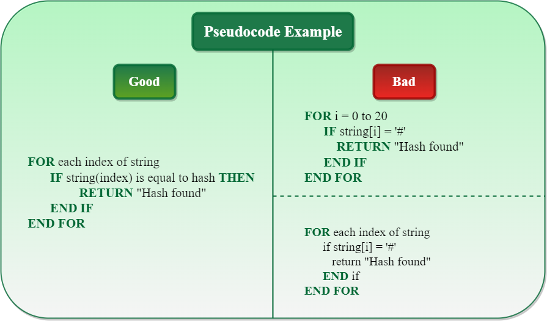

5.8 Pseudo Code
Pseudocode is a step-by-step description of an algorithm written in simple English using a code-like structure. It is designed for human understanding, not for machine execution, and does not follow the syntax of any programming language.
During low-level design, each module's algorithm is expressed in pseudocode before coding begins. Along with structure charts and flowcharts, pseudocode becomes part of the project documentation handed to programmers and testers.
Why do we need pseudocode?
- Helps programmers plan the solution before writing actual code.
- Makes the logic easy to understand for others reading the solution.
- Bridges the gap between algorithm design and coding.
- Reduces logical errors before implementation.
- Pseudocode is an intermediate state between algorithm and program.
Characteristics of pseudocode
- Pseudocode is language-independent — not tied to any particular programming language syntax.
- It uses familiar programming constructs (IF, WHILE, FOR, assignments) combined with plain English descriptions.
- It focuses on the logic and steps of an algorithm, not on declaration syntax or memory management.
- It is more structured than plain prose but less rigid than actual code.
How to write pseudocode
Before writing pseudocode for any algorithm, keep the following points in mind:
- Organize tasks logically and write steps in sequence.
- Define the goal first. Example: "This program prints the first N Fibonacci numbers."
- Use standard programming constructs: IF–ELSE, FOR, WHILE.
- Indent blocks properly to improve readability and clarity.
- Use clear and meaningful names for variables and steps.
- Write keywords in CAPITAL letters (IF, ELSE, WHILE, FOR, RETURN).
- Ensure the pseudocode is complete, finite, and easy to understand.
- Avoid actual programming syntax — keep it simple and language-independent.
Good vs bad pseudocode

- Good: Keywords in capitals, descriptive English, proper indentation, no language-specific syntax.
- Bad: Uses array indexing (
string[i]), hardcoded bounds, symbols like#, or inconsistent keyword casing.
Pseudocode examples
1. Finding the maximum of three numbers
BEGIN
INPUT num1, num2, num3
SET max = num1
IF num2 > max THEN
SET max = num2
END IF
IF num3 > max THEN
SET max = num3
END IF
OUTPUT max
END2. Calculating average marks
BEGIN
INPUT total_students
SET sum = 0
SET count = 0
WHILE count < total_students DO
INPUT mark
SET sum = sum + mark
SET count = count + 1
END WHILE
SET average = sum / total_students
OUTPUT average
END3. Binary search
Binary search is a searching algorithm that works only for a sorted search space. It repeatedly divides the search space in half by checking whether the target lies in the left or right half.
BINARY_SEARCH(ARR, X, LOW, HIGH)
WHILE LOW <= HIGH
MID = (LOW + HIGH) / 2
IF ARR[MID] == X THEN
RETURN MID
ELSE IF X > ARR[MID] THEN
LOW = MID + 1
ELSE
HIGH = MID - 1
END IF
END WHILE4. Quick sort
QuickSort is a divide and conquer algorithm. It picks a pivot element and partitions the array so elements smaller than the pivot go left and greater elements go right. The same process repeats recursively for both halves until the array is sorted.
QUICKSORT(ARR, LOW, HIGH)
IF LOW < HIGH THEN
PIVOT = PARTITION(ARR, LOW, HIGH)
QUICKSORT(ARR, LOW, PIVOT - 1)
QUICKSORT(ARR, PIVOT + 1, HIGH)
END IFHere, LOW is the starting index and HIGH is the ending index.
Algorithm vs pseudocode
| Aspect | Algorithm | Pseudocode |
|---|---|---|
| Definition | A well-defined, step-based solution to a particular problem. | A step-by-step description of an algorithm in code-like structure using plain English. |
| Language | Uses simple English words only. | Uses reserved keywords like IF-ELSE, FOR, WHILE. |
| Nature | A sequence of steps to solve a problem. | Fake code — pseudo means fake; code-like structure with plain English. |
| Rules | No strict rules for writing. | Certain conventions and formatting rules apply. |
| Relationship | An algorithm can be considered pseudocode. | Pseudocode cannot be considered an algorithm on its own. |
| Readability | Can be difficult to understand and interpret. | Easy to understand and interpret. |
Flowchart vs pseudocode
| Aspect | Flowchart | Pseudocode |
|---|---|---|
| Representation | Pictorial representation of the flow of an algorithm. | Step-by-step description in code-like structure using plain English. |
| Symbols | Standard shapes — boxes, circles, diamonds, arrows for input, output, decisions, start/stop. | Reserved keywords like IF-ELSE, FOR, WHILE; no graphical symbols. |
| Purpose | Graphical representation for visual understanding of data flow. | Fake code for understanding logic before implementation. |
| Best suited for | Documentation and visual communication. | Understanding logic and planning before coding. |
Practice questions — placement exams
The following pseudocode questions are commonly asked in company placement tests. Trace each program step by step to find the output.
Infosys pseudocode questions
Question 1
FOR i = 0 TO 4 STEP 1 DO
IF i == i++ + --i THEN
DISPLAY i
END IF
END FOR0Question 2
SET Character c = '7'
SWITCH(c)
CASE '1': DISPLAY "One"
CASE '7': DISPLAY "Seven"
CASE '2': DISPLAY "Two"
DEFAULT: DISPLAY "Hello"
BREAK
END SWITCHSevenTwoHelloQuestion 3
Integer a, p
SET a = 5
a = a + 1
a = a * 2
a = a / 2
p = a / 5 + 6
PRINT p7Question 4
Integer a, b, c
SET b = 40, a = 20, c = 20
a = a + c
c = c + a
a = a + c
c = c + a
PRINT a + b + c300Question 5
Integer a, b, c
SET a = 4, b = 3, c = 1
IF (a >> (c - 1) && b << (c + 1)) THEN
a = a + c
ELSE
b = a <<< c
END IF
PRINT a - b + c3Accenture pseudocode questions
Question 1 — for a = 5, b = 1
Integer funn(Integer a, Integer b)
IF (b + a || a - b) && (b > a) && 1) THEN
a = a + b + b - 2
RETURN 3 - a
ELSE
RETURN a - b + 1
END IF
RETURN a + b
END FUNCTION funn()5Question 2 — for a = 5, b = 1
Integer funn(Integer a, Integer b)
IF (b MOD a && a MOD b) || (a ^ b > a) THEN
a = a ^ b
ELSE
RETURN a - b
END IF
RETURN a + b
END FUNCTION funn()5Question 3
Integer a, b, c
SET a = 4, b = 4, c = 4
IF (a & (b ^ b) & c) THEN
a = a >> 1
END IF
PRINT a + b + c12Question 4 — for a = 10, b = 11
Integer funn(Integer a, Integer b)
IF (0) THEN
RETURN a - b - funn(-7, -1)
END IF
a = a + a + a + a
RETURN a
END FUNCTION funn()40Question 5 — for a = 5, b = 1
Integer funn(Integer a, Integer b)
IF (b + a || a - b) && (b > a) && 1) THEN
a = a + b + b - 2
RETURN 3 - a
ELSE
RETURN a - b + 1
END IF
RETURN a + b
END FUNCTION fun()5Capgemini pseudocode questions
Question 1 — for a = 8, b = 1
Integer funn(Integer a, Integer b)
IF (a > b && a > 0) THEN
RETURN a + b + funn(b - 1, a - 1)
END IF
RETURN a + b
END FUNCTION funn()16Question 2 — for p = 7, q = 2
Integer funn(Integer p, Integer q)
IF (p + q < 10) THEN
RETURN 1 + funn(p + 1, q + 1)
ELSE
RETURN 2
END IF
END FUNCTION funn()3Question 3 — for a = 2, b = 7, c = 7
Integer funn(Integer a, Integer b, Integer c)
IF ((b + a) < (a - b)) THEN
a = a + c
b = (10 + 10) + c
END IF
RETURN a + b + c
END FUNCTION funn()16Question 4
String str1 = "err", str2 = "krr"
PRINT (count consonant(upper(reverse(str2) + reverse(str1))))5Question 5
Integer a, b, c
SET a = 2, b = 11, c = 5
IF ((4 + 5) < (6 + b)) THEN
b = c & a
END IF
PRINT a + b + c7Q: What is pseudocode? Why is it used in the design phase? Write pseudocode for a simple task.
Model answer points:
- Define: step-by-step algorithm description in plain English with code-like structure; not executable.
- Purpose: plan solutions, bridge algorithm to code, reduce errors, improve communication.
- Properties: language-independent, structured, keywords in capitals, proper indentation.
- vs algorithm: pseudocode uses IF/FOR/WHILE keywords; algorithm uses plain English only.
- vs flowchart: pseudocode is text-based; flowchart is pictorial with standard symbols.
- Write small example (e.g., find max, binary search, or calculate average).